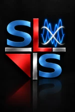
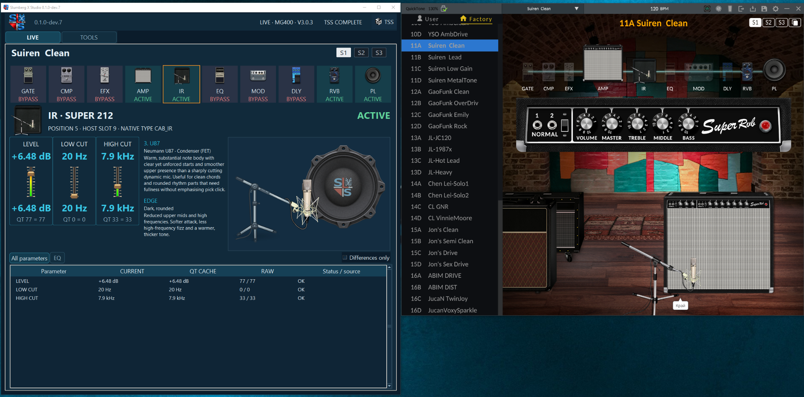
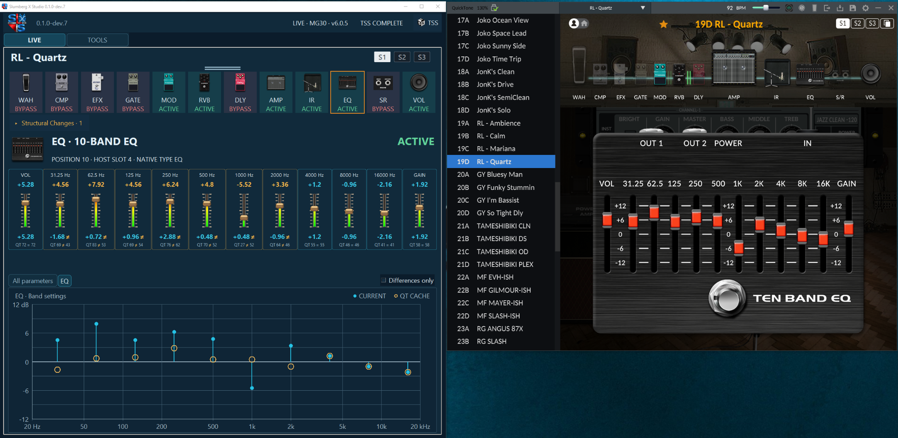
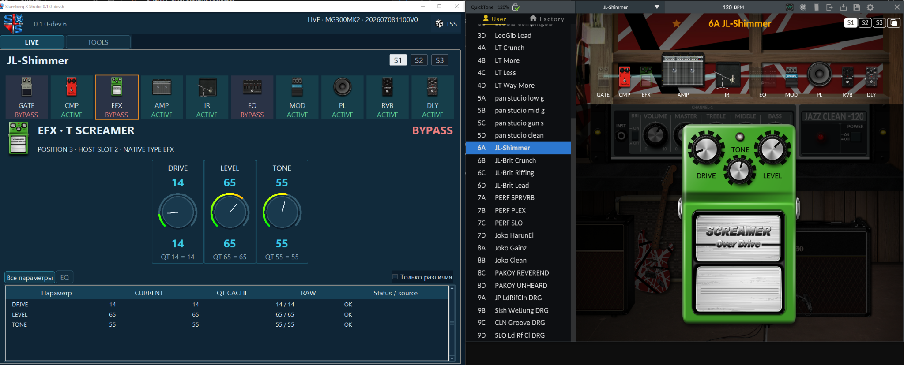
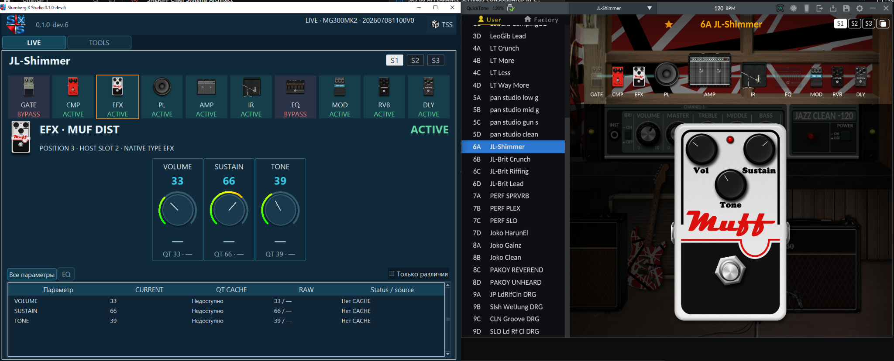
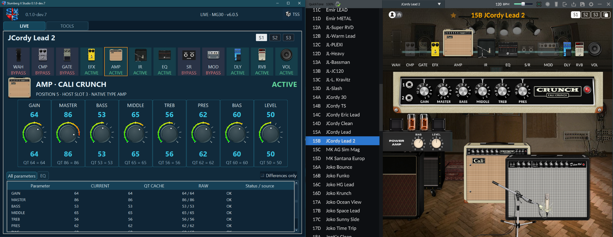
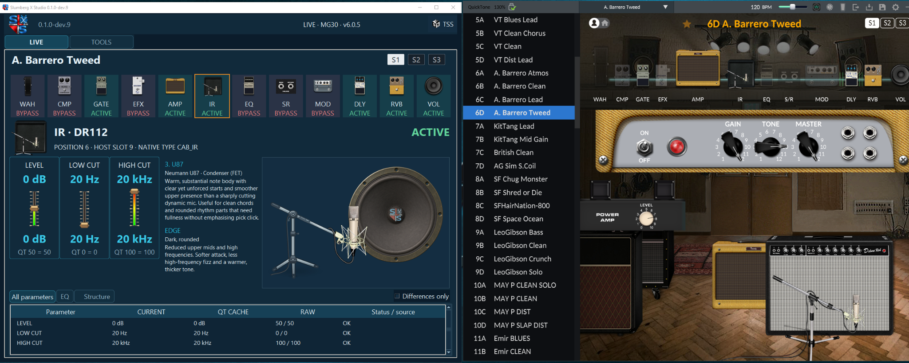

LIVE CONTROL
Просмотр, сравнение и точное изменение настроек процессора.

Программа для работы с гитарными процессорами, пресетами и звуком.
NUX · QuickTone · Scenes · Presets · IR / NAM
Просмотр, сравнение и точное изменение настроек процессора.
Управление пресетами, импорт, экспорт, сравнение и резервное копирование.
Хранение отдельных Scenes и создание из них новых пресетов.
Сохранение вариантов звучания, A/B/C сравнение и восстановление настроек.
Анализ, сравнение и управление звуковыми ресурсами.
Универсальный формат хранения и обмена пресетами и Scenes.
Перенос и адаптация пресетов между процессорами разных моделей и производителей.
SXS Reader для Windows работает совместно с NUX QuickTone 2.6.10.9.
Чтение текущих параметров, Scenes, Signal Chain, сравнение настроек и отображение всех изменённых параметров пресета относительно исходного состояния до начала редактирования.
Поддерживаемые процессоры: MG-400 GEN2, MG-300 MKII, MG-30, MG-101.
Поддержка MG-30 MKII предусмотрена. Аппаратная проверка — после начала продаж в феврале 2027 года.






Исходные публикации SXS с GuitarPlayer.ru. Новые записи и обсуждения — в GitHub Discussions.
Коллекции 2041 NAM-модели и 4387 IR-импульсов, каталоги источников и идея быстрой смены звука без перезаписи пресета.
Читать исходную публикациюПроверка QuickTone 2.6.10.9 на четырёх процессорах NUX и история первых автоматически собранных пресетов по песням Beatles.
Читать исходную публикациюКак идея автоматической сборки гитарных пресетов привела к созданию Slumberg X Studio, собственной энциклопедии звука и первых восьми пресетов.
Читать исходную публикациюТекущая версия SXS полнофункциональна в части чтения данных и распространяется бесплатно.
Разработкой SXS я занимаюсь потому, что мне это интересно, и планирую продолжать. Но публикация новых версий — отдельный вопрос.
Если вам тоже интересен проект и его дальнейшее развитие, вы можете поддержать его донатом. Если такой поддержки не будет, эта версия останется первой и последней в свободном доступе.
Software for guitar processors, presets and tone.
NUX · QuickTone · Scenes · Presets · IR / NAM
View, compare and precisely change processor settings.
Manage, import, export, compare and back up presets.
Store individual Scenes and assemble new presets from them.
Save tone variants, compare A/B/C and recall settings.
Analyse, compare and manage tone resources.
Portable format for storing and exchanging presets and Scenes.
Convert and adapt presets across processor models and manufacturers.
SXS Reader for Windows works with NUX QuickTone 2.6.10.9.
Reads current parameters, Scenes and Signal Chain, compares settings and displays all changed preset parameters against the state before editing began.
Supported processors: MG-400 GEN2, MG-300 MKII, MG-30, MG-101.
MG-30 MKII support is included. Hardware testing is pending its expected February 2027 release.
Original SXS posts from GuitarPlayer.ru. New entries and discussions live on GitHub Discussions.
Collections of 2,041 NAM models and 4,387 IR files, source catalogs, and a workflow for quick tone changes without rewriting presets.
Read original postQuickTone 2.6.10.9 tested with four NUX processors and the story behind the first automatically generated Beatles presets.
Read original postHow an idea for AI-assisted guitar preset creation grew into Slumberg X Studio, a tone encyclopedia and eight experimental presets.
Read original postThe current SXS version is fully functional for reading data and is distributed free of charge.
I develop SXS because I am interested in it, and I plan to continue. Publishing future versions is a separate decision.
If you are interested in this project and its future development, you can support it with a donation. Without such support, this will remain the first and last publicly available version.
Комментарии
Комментарии будут доступны после подключения GitHub Discussions.